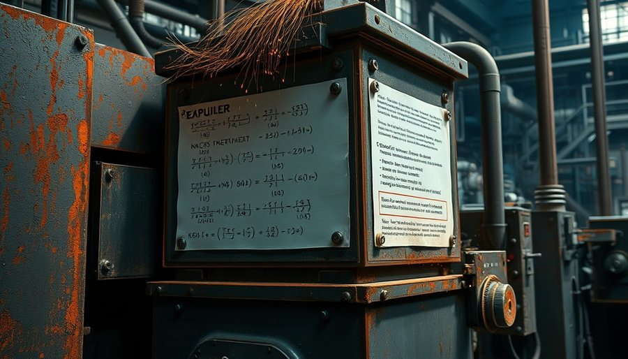

费马在《算术》页边写下那个断言时，大概没想到它会变成数学史上最漫长的悬案。
他本职是法官，数学只是业余爱好。在阅读丢番图《算术》时，他在页边随手写下许多注释。其中一条断言：当整数n大于2时，方程x^n + y^n = z^n没有正整数解。接着他补了一句：“我确实发现了一个美妙的证明，但空白太小，写不下。”
这句“空白太小”成了数学史上最著名的借口。此后三百多年，欧拉证明了n=3，热尔曼证明了n=5，柯西推进了部分情形，但一般情形始终遥不可及。问题看似简单，却像一块巨石，谁也搬不动。
直到20世纪80年代，一条看似无关的路径出现了。德国数学家弗雷提出，如果费马大定理不成立，那么椭圆曲线和模形式之间的谷山-志村猜想也会被推翻。1986年，里贝特严格证明了这一步。这意味着：只要证明谷山-志村猜想，就能证明费马大定理。
怀尔斯当时在普林斯顿，10岁时在图书馆第一次读到费马大定理，就立志要证明它。里贝特的突破让他看到了机会。他做了一个反常的决定：不发表任何阶段性成果，完全转入秘密工作。整整七年，他停止发表论文，推掉会议邀请，连同事都以为他江郎才尽了。只有他的妻子知道，他每天在阁楼里写满草稿。
1993年6月，他在剑桥大学牛顿研究所做了三场讲座。事先没有公布题目，听众只被告知是“模形式、椭圆曲线与伽罗瓦表示”。随着讲座进行，人们逐渐意识到他在证明谷山-志村猜想，进而证明费马大定理。最后一天，他写完了关键情形，然后转过身说：“我想我就停在这里。”全场起立鼓掌。
消息传遍全球。那份129页的论文投向顶级期刊，评审程序启动。能完整审阅这份证明的人，全世界不超过十个。他们组成了评审团，开始逐行核验。
两个月后，问题出现了。
评审团逐行核验了两个多月。在论文第三部分，他们发现了一个致命的逻辑缺口。
这个缺口藏得很深。怀尔斯在构造欧拉系统时，有一个步骤没有完全闭合。表面上看，论证似乎成立，但严格推下去，链条会断。
评审团向怀尔斯指出后，他起初以为几周就能解决，但越深入，缺口越大。
他后来回忆，那段时间是他人生中最黑暗的日子。他尝试了各种方法，缺口反而越来越大。外界开始流传质疑，有人甚至认为证明可能整体错误。怀尔斯请来学生理查德·泰勒帮忙，两人闭关工作。
一整年。
1994年9月，怀尔斯几乎要放弃。他正在写一份详细说明为什么修补失败的报告。就在那一天，他突然意识到，之前放弃的一条旧路径，如果结合另一种工具，恰好可以绕过缺口。他在事后说：“那是我一生中最重要的一次灵光闪现。”
修补后的论文再次提交。1995年，费马大定理被正式承认。从1637到1995，358年。
但这件事留下了一个更大的问题。
全世界最顶尖的几位数学家，花了两个多月才审完129页，还差点漏掉一个致命缺口。如果不是评审团格外较真，这个漏洞可能就滑过去了。那么，其他更复杂、更长的证明呢？当代数学论文动辄数百页，依赖大量前人结果，谁有精力逐行核验？谁又能保证没有隐藏的“显然”跳过了关键步骤？
人类审查体系的极限，在这里暴露得清清楚楚。

数学界其实早就开始寻找另一条路。
过去几十年，一种叫“交互式定理证明器”的工具逐渐成熟。其中最知名的是Lean。它的原理听起来很苛刻：任何证明都必须从最底层的公理出发，一步一步推演，直到目标命题。每一步都必须被编译器检查通过，不允许“显然”“同理可知”“易证”这样的占位符。
这等于把数学证明变成可执行的代码。如果代码能编译通过，说明逻辑链没有断裂；如果编译报错，那就是哪里出了问题——没有任何人情可讲。
但代价也极高。把一篇传统数学论文形式化，工作量是原论文的数十倍甚至上百倍。一个在人类看来“显然”的等式，在Lean中可能需要展开成几百行代码，因为编译器不承认任何未经定义的推理，必须从集合论公理一步步构建。
此前学界普遍评估，要将怀尔斯那129页证明完全形式化，需要数十位顶级专家全职投入多年。没人敢轻易启动。
直到2026年，事情突然变了。
据Anthropic发布的研究报告，他们部署了一套多智能体系统，由数十个Claude智能体协同工作。目标只有一个：把怀尔斯的证明完整翻译成Lean代码。
11天后，任务完成。
系统生成了近三万个中间引理，总共约1300万行Lean代码。这个体量，大约是当前最大数学库Mathlib的数倍。整份代码没有任何“sorry”占位符——在Lean中，sorry就是“此处略过”的标记，代表一个未完成的证明步骤。1300万行，零sorry。
更关键的是，这份代码通过了一个独立Rust验证内核的交叉检验。也就是说，不仅Lean编译器认为它正确，另一个完全独立的检查器也得出同样结论。
人类审了两个多月，审出一个漏洞，补了一年。机器审了11天，没有放过任何一步。
直接让一个AI模型去读129页论文、然后输出完整证明，会发生什么？答案是：它会陷入幻觉循环。模型会在某一步编造一个看似合理但实际不成立的推理，然后基于这个幻觉继续推导，最后整个链条崩塌。
这是长程推理的死穴。
哥伦比亚大学的研究团队很清楚这一点。他们在2026年发表的Prove2Me论文中写道，真正让机器完成形式化的，不是更强的推理能力，而是更笨拙的拆解。
他们用有向无环图（DAG）把整份证明拆成了数万个细粒度的局部引理节点。每个节点只包含一个极小的逻辑步骤：从前提A推出结论B。节点足够小，模型不再需要全局理解，幻觉率大幅下降。模型的任务被限制在这个微观单元里，只需要完成这一小步的推演。
人类研究员则负责设定宏观规则，定义节点之间的依赖关系，并在模型出错时纠偏。据论文描述，整个平台设计为开放协作式，任何数学家都可以参与定义节点和规则，形成一个分布式的验证网络。
换句话说，机器做的是最笨、最重复的“填空”，而人类把控的是整体结构。
Anthropic的多智能体系统采用了类似思路。数十个智能体分别领取不同的节点，各自独立工作，然后由协调系统检查一致性。如果某个节点的输出与依赖前提矛盾，就会被标记出来，重新生成。
这不再是传统意义上的“证明”。它更像一条工厂流水线：把一座大山敲碎成石子，然后让机器一块一块地搬，最后再拼回山的样子。
1300万行代码，就是这样一行一行写出来的。
有人会问：这能叫“机器证明了定理”吗？不能。正确性是由怀尔斯的原始证明保证的，机器做的是翻译和验证。但它完成了一件人类做不到的事：把一份长到人类审不动的证明，变成了一份每一行都可以被独立检查的数字档案。
信任的基础，从“我相信那几个专家的判断”，变成了“我信任这个编译器的规则”。裁判换了。
1637年，费马在页边写下断言时，抱怨空白太小，写不下证明。他大概不会想到，三百多年后，人类用129页论文填上了那个逻辑空白。更不会想到，又过了三十年，机器用1300万行代码，把那个空白填进了数字世界。
1300万行代码，打印出来大概有26万页。假设一个人每天能检查一千行代码，1300万行要检查三十多年。而机器只用了11天。
费马的《算术》页边，连几行都写不下。这中间差的不是纸面空间，而是验证方式的彻底转变。
怀尔斯证明之后，数学界其实面临一个沉默的困境。现代数学越来越复杂，一篇重要论文的审阅周期动辄数年。有些证明，比如有限单群分类定理，总长度超过一万页，分散在数百篇论文中，根本不可能由一个人完整审阅。人类评审体系，已经走到了能力的边界。
形式化验证提供了一条出路。它不是让AI取代数学家去发现新定理，而是把裁判权从人的手里，移交给了程序。程序不会累，不会被说服，不会因为作者的名气而跳过检查。它只认一条：每一步都必须从公理出发，逻辑闭合。
据Anthropic的报告，这次形式化过程中，系统还自动识别出了怀尔斯原始证明中几处不够严谨的过渡——不是错误，而是人类评审通常会“放过去”的微小跳跃。在编译器面前，这些跳跃无处藏身。
当然，11天完成的形式化，目前仍是单一信源的报告，尚未被独立复现。1300万行代码的统计口径，也需要更多检验。但方向已经清晰：知识的可信裁判，正在从权威的人转向透明的流程。这不仅仅是数学的事。任何依赖长程逻辑链的领域，都可能面临类似的验证危机。当裁判从人变成程序，信任的成本会急剧下降，而信任的可靠性会上升。
费马那句“空白太小”成了一个遥远的回响。当年他写不下证明的地方，现在被1300万行代码填满了。不是用墨水，是用逻辑。
余波
据Anthropic发布的研究报告，这份1300万行的Lean代码已公开发布。任何一个人都可以在自己的电脑上，从头到尾验证费马大定理的每一步逻辑。三百多年前，费马说空白太小；现在，空白被拆成了数万个节点，每一个都亮着绿灯。信任不再需要仰仗天才的点头，只需要一台能运行编译器的普通电脑。
小汪老师的成长观察笔记